🔀
n8n + Claude Code 자동화 1일차 0줄 로 자동화를 짓는다
내 노트북에 (Docker 없이) npx로 n8n을 직접 띄우고, Claude Code를 파트너 삼아 워크플로를 설계·구축한다.
오늘 (1일차)
M1~M6
설치·기초·PRD·분기
✋ 코딩 경험은 필요 없습니다. 오늘 끝에는 "스케줄 → 구글시트 → 메일"이 도는 첫 워크플로를 내 노트북에서 직접 만들어 실행합니다.
이틀 동안 코딩 없이, 그러나 "내 노트북(self-host)"에 직접 띄워 자동화를 만든다는 점을 강조. 클라우드가 아니라 내 노트북에 npx로 가볍게 올린다(Docker 없이·Claude Code 주도)는 게 이 강의의 차별점. Claude Code는 설치·빌드를 같이 하는 파트너.
🗺️
오늘은 부품 을 쌓고, 내일은 조립 합니다
1
M1 · 1h
자동화+AI-native
도구지도 4구분
2
M2 · 1.5h
self-host 설치
npx로 내 노트북에
3
M3 · 1.5h
첫 워크플로
n8n-MCP로 노드 빌드
5
M5 · 2.5h
분기·집계·다중
일일매출 본실습
📦 2일차 예고: 오늘의 부품을 주간 성과 리포트 로 조립하고, 회사 API 키로 Anthropic Chat Model 을 직접 핸즈온합니다. (M6은 1일차 디버깅·정리)
1일차=부품(설치·기초·PRD·분기·다중출력·디버깅), 2일차=조립(주간 리포트+AI 노드+내 업무 프로젝트). 6개 챕터를 손으로 짚고 밀리면 이름만 읽고 넘긴다.
🤝
"내 노트북에, 코딩 0줄 로 자동화" — 오늘의 목표
홈쇼핑·이커머스 실무의 반복 업무는 패턴이 분명합니다. 패턴이 분명하면 자동화 후보입니다.
🖥️ self-host — 클라우드가 아니라 내 노트북에 npx로 n8n을 직접 띄운다(Docker 없이 · 데이터 주권)🤖 Claude Code 파트너 — 설치 명령 생성·에러 해결·노드 빌드를 같이 한다📄 PRD 먼저 — 만들기 전에 "무엇을 자동화할지"를 경량 설계 스킬로 한 번에 명확히 한다🔀 분기·집계·다중출력 — 일일매출을 상품군별로 모아 여러 곳에 보낸다
오늘의 중심 목표: 이 부품들(설치·트리거·노드·PRD·분기·다중출력·디버깅)을 1일차에 쌓고, 2일차에 주간 성과 리포트 로 조립합니다.
오늘의 약속 한 줄="내 노트북에 코딩 0줄로 자동화". self-host·Claude Code 파트너·PRD 먼저·분기 네 기둥을 예고. "오늘 코드 한 줄도 안 칩니다"를 명시.
✅
시작 전 5분 — 여섯 가지만 미리 맞춥시다
비개발 수강생이 많으면 설치·다운로드에서 시간이 녹습니다. 본 실습 전에 아래를 미리 확인해 두면 막힘이 줄어듭니다.
① Claude Code 로그인 확인 — 터미널에서 /status로 로그인 상태 점검.로그인이 안 돼 있으면 여기서부터 막힙니다.
② Node 버전 확인 — node -v → 20.19~24.x 범위인지.없거나 범위 밖이면 nvm으로 설치/전환(nvm install 20, ★sudo npm 금지).
③ npx n8n 1회 미리 실행다운로드로 1~5분 .강의 전에 한 번 받아두면 본 실습에서 기다리지 않습니다.
④ localhost:5678 접속 확인포트 점유 시 N8N_PORT=8080 npx n8n → localhost:8080.
⑤ Google 계정 · OAuth 준비 — Sheets/Gmail 연결용 계정 로그인.사내 정책상 외부앱 허용이 필요할 수 있음(IT에 미리 문의).
⑥ 회사 Anthropic API 키 수령 — 2일차 워크플로 AI 노드용(sk-ant-...).개인 Claude 구독과 별개 — 회사가 제공하는 종량과금 키.
ℹ️ ⚠️ 미리: 비개발 수강생이 다수면 여기서 시간이 녹습니다 . node -v·npx n8n 1회 실행·localhost:5678 접속은 강의 시작 전에 끝내두세요.
본 실습 전에 6가지 사전 점검: ①Claude Code /status 로그인 ②node -v 20.19~24.x(없으면 nvm) ③npx n8n 1회 미리 실행(첫 다운로드 1~5분) ④localhost:5678 접속 ⑤Google 계정·OAuth ⑥회사 Anthropic API 키 수령. 비개발 다수면 여기서 시간 녹으니 미리 맞추라고 강조.
🔁
매주 손으로 만드는 그 리포트,자동으로 돌릴 수 있습니다
사람이 매번 같은 순서로 데이터를 옮기고·합치고·보내는 일은 워크플로로 묶을 수 있습니다.
핵심 비유 🧩 — 자동화 워크플로는 컨베이어 벨트 입니다. 트리거 가 벨트를 켜고, 데이터가 노드 를 하나씩 거치며 가공되어, 마지막 액션 에서 시트·메일로 나갑니다.
📅 매일 아침 편성표를 시트에서 확인해 담당자에게 메일📊 매일·매주 매출 시트를 열어 상품군별로 합산·요약📧 주간 리포트 를 만들어 팀장·메일링리스트에 발송
반복업무 자동화=사람이 매번 같은 순서로 하던 데이터 이동·집계·발송을 워크플로로 묶는 것. 컨베이어 벨트 비유로 트리거→노드→액션을 각인.
⚖️
자동화하기 좋은 일 vs 어려운 일
자동화는 "반복 + 규칙이 명확"할 때 빛납니다. 매번 다른 판단이 필요하면 어려운 일입니다.
✅
자동화 좋은 일
• 매일/매주 반복 되는 작업규칙이 분명 (언제·무엇을·어디로)
⚠️
자동화 어려운 일
• 매번 다른 판단 ·협상·창작
💡 팁: "규칙이 분명한 자연어 분류"(예: CS 문의를 배송/환불로 나누기)는 AI 노드 로 자동화 가능 — 2일차에 회사 API 키로 직접 다룹니다.
좋은 일=반복+규칙 분명(매일 9시 편성표 메일), 어려운 일=매번 사람 판단(보상 여부). 업무를 불러주고 손들기로 분류 활동. AI 노드로 "규칙 있는 자연어 분류"는 가능하다고 다리 놓기.
🧑💻
도구를 아는 사람이 아니라발견 → 설계 → 구축 → 유지 하는 사람
내 업무에서 자동화할 곳을 찾아 워크플로로 만들고 고쳐 나가는 사람입니다.
🔍
① 발견
내 업무 중 반복되고 규칙이 분명한 작업을 찾아낸다.
✏️
② 설계
자동화 PRD (트리거·입력·처리·출력·예외)로 흐름을 먼저 그린다.
🔨
③ 구축
Claude Code+n8n-MCP로 노드를 순차 빌드·검증 해 동작시킨다.
🔧
④ 유지
에러 핸들링·로그 확인으로 실패에 대비 하고 고친다.
전문가=발견→설계→구축→유지. 오늘 연습하는 게 정확히 이 4단계라고 연결. 설계 단계가 곧 M4 PRD, 구축이 Claude Code+MCP.
🔑
같은 'Claude'·'AI'라도 용도가 4가지 로 다릅니다
① Claude Code (터미널 AI)
설치 명령 생성 · 에러 해결 · 워크플로 빌드
파트너. n8n-MCP를 붙여 정확한 노드를 부른다.
결제: Claude 구독(Pro 등)으로 구동
② n8n-MCP (n8n 노드 두뇌)
Claude Code에 붙이는 도구 — 정확한 노드명·
파라미터 조회·워크플로 검증(환각↓).
결제: 무료 한도/자체호스팅 ⚠️당일 확인
③ Claude 챗 구독 (claude.ai)
채팅창 — 설계·디버깅 보조.
워크플로 안 AI 노드는 구동 못 함 .
결제: 월 구독(USD) ⚠️요금 당일 확인
④ 워크플로 Anthropic 노드 ★
n8n 안의 AI 노드(분류·요약)를 실제 실행.
2일차에 회사 키로 직접 핸즈온.
결제: 별도 Anthropic API 키(종량과금)
①②③은 "만드는 동안" 돕는 도구, ④는 "워크플로가 돌 때" 실행되는 노드 — 결제·정체가 모두 다릅니다.
⚠️ ⚠️ ① 결제 주의(당일 확인): Claude Code는 Pro/Max 구독으로 쓰되, 환경변수에 ANTHROPIC_API_KEY가 설정돼 있으면 구독 대신 API 종량과금 으로 빠질 수 있습니다 — 강의 직전 키 환경변수 설정 여부를 확인하세요.
오늘 가장 중요한 슬라이드. ①Claude Code(터미널 파트너) ②n8n-MCP(노드 두뇌) ③Claude 챗 구독(설계 보조) ④워크플로 Anthropic 노드(API 키로 실행). ④만 종량과금 API 키이고 ③ 구독으로는 절대 안 돈다. 절대 빨리 넘기지 말 것. ①Claude Code는 Pro/Max 구독으로 쓰되 ANTHROPIC_API_KEY가 잡혀 있으면 구독 대신 API 과금으로 빠질 수 있으니 키 환경변수 확인(당일 확인).
🖥️
왜 내 노트북 에 직접 띄우나 — 데이터 주권
클라우드 대신 내 노트북/회사 서버에 직접 올리면, 데이터와 운영을 내가 통제합니다(대신 운영 책임도 내가).
🛡️
self-host의 장점
• 데이터 주권 — 매출·CS·계정이 내 노트북 안에
⚠️
대신 따라오는 책임
• 설치·타임존·업데이트를 직접 관리~/.n8n 폴더 복사)·보안(계정·HTTPS)Claude Code가 파트너
ℹ️ 오늘 실습: 각자 노트북에 npx로 가볍게 n8n을 띄웁니다(Docker 없이 · Claude Code 주도). "로컬 체험"과 "사내 24시간 운영"은 다릅니다 — 후자는 사내 IT와(이때는 Docker도 한 방법).
🪄 명령어 외울 필요 없음 — Claude Code가 설치를 대신 다 해줍니다: "내 컴퓨터에 n8n 설치해줘" 한마디면 → ① node -v로 Node 확인(없으면 nvm 안내) → ② GENERIC_TIMEZONE=Asia/Seoul npx n8n 실행 → ③ 다운로드·기동 대기 → ④ localhost:5678 접속 안내 → ⑤ 에러(포트 충돌·비번 분실 등) 해결까지 설치 전 과정을 진행 합니다. ★사람이 직접 할 건 셋뿐 — 브라우저 열기 · 계정 입력 · 시스템 설치 승인 (AI가 다 하지만 이 셋은 사람).
self-host=내 노트북에 직접. 장점은 데이터 주권·사내 연동, 비용은 운영 책임(업데이트·백업·보안). 오늘은 각자 노트북에 npx로 가볍게(Docker 없이·Claude Code 주도) 띄우는 실습. ★핵심 메시지: 명령어 외울 필요 없이 "내 컴퓨터에 n8n 설치해줘" 한마디로 Claude Code가 node -v 확인→npx n8n 실행→대기→localhost:5678 안내→에러 해결까지 설치 전 과정을 대신 진행. 사람이 할 건 브라우저 열기·계정 입력·시스템 설치 승인 셋뿐(과장 금지). 운영 책임은 M6/2일차에서 강조.
🤖
명령 외우지 말고 Claude Code 에게,npx 로
수강생이 Claude Code에게 그대로 부탁합니다 🗣️ — "내 컴퓨터에 n8n 설치해서 띄워줘. 타임존 Asia/Seoul, Docker 말고 npx로." Claude Code가 Node를 확인하고, 실행 명령을 만들어 띄워 줍니다.
🧭
Claude Code가 하는 일
① node -v로 Node 20.19~24.x 확인(없으면 nvm 안내) → ② GENERIC_TIMEZONE=Asia/Seoul npx n8n 실행(첫 실행 1~5분) → ③ localhost:5678 안내.
💾
데이터 = ~/.n8n 폴더
워크플로·계정·자격증명이 ~/.n8n에 저장되어 껐다 켜도 유지 됩니다(Docker 볼륨 불필요). 백업은 폴더 복사면 끝.
핵심 비유 🧩 — ~/.n8n 폴더는 "내 워크플로 금고"
설치 방식=Claude Code 주도·Docker 없이 npx. 부탁 문장→Claude Code가 node -v 확인(없으면 nvm)→GENERIC_TIMEZONE=Asia/Seoul npx n8n(첫 실행 1~5분)→localhost:5678 안내. 데이터는 ~/.n8n에 저장(껐다 켜도 유지, 볼륨 불필요), 백업=폴더 복사. 비유는 ~/.n8n=내 워크플로 금고.
⌨️
내 노트북에 n8n 띄우기 — 한 줄 명령
타임존 Asia/Seoul, Docker 없이 npx로. 직접 외우지 말고 Claude Code가 만들어 실행하게 하세요 — 막히면 그대로 물어보면 됩니다.
⧉ 복사
node -v # Node 20.19~24.x 확인 (없으면 nvm 안내)
GENERIC_TIMEZONE=Asia/Seoul npx n8n # 첫 실행은 1~5분 다운로드(정상)
$ GENERIC_TIMEZONE=Asia/Seoul npx n8n
…(첫 실행은 패키지 다운로드로 1~5분)…
n8n Task Broker ready on 127.0.0.1, port 5679
Version: 2.27.4
Building workflow dependency index...
Editor is now accessible via:
http://localhost:5678
[CAP-02-install] 실제 기동 로그 — "Editor is now accessible"가 뜨면 성공 → 브라우저로 localhost:5678 접속해 Owner 생성
⚠️ Node 지원 범위·npx 캐시 동작은 버전에 따라 변할 수 있음 — 강사가 당일 라이브 재확인(공식 install-with-npm).
node -v로 Node 20.19~24.x 확인(없으면 nvm)→GENERIC_TIMEZONE=Asia/Seoul npx n8n(첫 실행 1~5분 다운로드, 정상). "복사"로 가져가되 직접 치지 말고 Claude Code에 "Asia/Seoul, Docker 말고 npx로 n8n 띄워줘, 나는 윈도우(또는 맥)야"로 생성·실행받게 한다. Node 범위·npx 동작은 당일 재확인 각주.
👤
localhost:5678 접속 → Owner 계정 생성
1 Node 확인 — Claude Code가 node -v 로 20.19~24.x 확인.없거나 범위 밖이면 nvm 설치를 안내(시스템 변경 승인은 내가).
2 명령 실행 — 앞 슬라이드 GENERIC_TIMEZONE=Asia/Seoul npx n8n . 첫 실행은 다운로드로 1~5분, 이후 "n8n ready on ..." 메시지.
3 브라우저 http://localhost:5678 접속 → Setup Wizard 에서 이메일·비밀번호 입력 = Owner 계정 → 에디터 진입.
4 체크포인트 — New 워크플로 → Manual Trigger 1개 추가 → 실행 녹색 이면 설치 성공.
💾 데이터는 ~/.n8n에: Owner 계정·워크플로가 이 폴더에 저장되어 껐다 켜도 유지됩니다(Docker 볼륨 불필요). 막히면 다음 슬라이드처럼 에러를 Claude Code에 붙여넣으세요.
Node 확인(node -v 20.19~24.x, 없으면 nvm)→GENERIC_TIMEZONE=Asia/Seoul npx n8n→localhost:5678 Setup Wizard에서 이메일·비번 입력=Owner→빈 워크플로 Manual Trigger 실행 녹색이면 설치 성공. 데이터는 ~/.n8n에 저장(껐다 켜도 유지, 볼륨 불필요). 막히면 에러를 Claude Code에.
🤖
에러가 나면 터미널 출력 을 Claude Code 에 붙여넣으세요
혼자 헤매지 말고, npx 실행 중 뜬 에러를 그대로 붙여 "이 에러 왜 나? 어떻게 고쳐?"라고 물으면 같이 디버깅하는 파트너가 됩니다.
⧉ 복사
GENERIC_TIMEZONE=Asia/Seoul npx n8n
# ↑ 실행 중 뜬 에러 출력 전체를 복사해서 Claude Code에 그대로 붙여넣기:
# "n8n을 npx로 띄우는데 이 에러가 떠. 원인이 뭐고 어떻게 고쳐?"
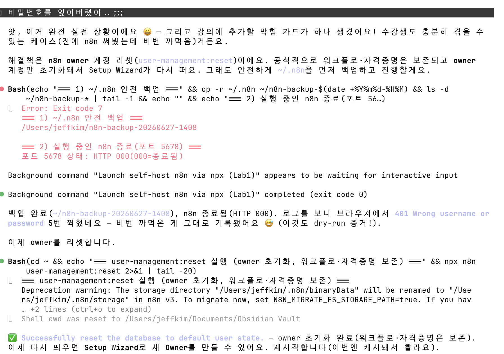
[CAP-03-claude-fix] 비번 분실(401) → Claude Code가 npx n8n user-management:reset으로 해결 ("Successfully reset" · 워크플로·자격증명은 보존)
💬 AI는 만능이 아니라 파트너: Claude Code가 초안·가설 을 주면, 실제로 맞는지는 다시 실행해 확인 합니다. 브라우저 열기·Owner 정보 입력·Node 설치 승인 은 내가 합니다 — "같이 디버깅하는 파트너"이지, 대신 책임지는 존재가 아닙니다.
핵심 행동: 막히면 npx 실행 중 뜬 에러 출력을 통째로 Claude Code에 붙여 "원인·해결" 질문. AI는 가설/초안을 주고 검증은 다시 실행으로. Claude Code가 못 하는 것=브라우저 열기·Owner 입력·Node 설치 승인은 사용자. 과장 금지("같이 디버깅하는 파트너").
🛟
설치 중 자주 막히는 7가지 와 해결
① npm ERR! code EACCES
전역설치 권한 → ★sudo 금지nvm install 20 으로 재설치.
② Node 버전 안 맞음
Unsupported engine → node -v 확인 후 nvm use 20 (또는 22)로 전환.
③ 포트 5678 점유
EADDRINUSE :::5678 → N8N_PORT=8080 npx n8n → localhost:8080 .
④ 한참 무반응
npx 첫 다운로드 → 1~5분은 정상 . 강의 전 미리 1회 실행해 캐시해 두면 빠름.
⑤ (Win) n8n: command not found
전역 PATH 누락 → npm config get prefix 로 경로 확인·PATH 추가.
⑥ 스케줄 시간 이상
타임존 미설정 → GENERIC_TIMEZONE=Asia/Seoul 붙여 재실행.
👤 ⑦ Owner 화면이 안 보임: 이미 생성된 인스턴스(~/.n8n 잔존) → 기존 계정으로 로그인. 어느 카드든 막히면 → 에러 출력을 Claude Code에 .
7카드: EACCES(sudo 금지·nvm)/Node 버전 안 맞음(nvm 전환)/포트충돌(N8N_PORT=8080)/npx 첫 실행 느림(1~5분 정상)/Win PATH 누락/타임존 미설정/Owner 이미 생성. 빠르게 훑고, "막히면 에러 출력을 Claude Code에"로 수렴. ①⑤는 환경에서 자주 나옴.
▶️
▶ 지금 실습 — 워크북 Lab 1 을 펴세요지금부터 내 노트북에 Docker 없이 n8n을 직접 띄웁니다. 명령을 외우지 말고 Claude Code에게 시켜서 설치하고, 막히면 함께 풉니다. 한 동작 = 한 슬라이드로 따라오세요.
🎯
이번 랩에서 만드는 것
http://localhost:5678 에디터 접속 + Owner 계정 생성 + 빈 워크플로에 Manual Trigger 1개 실행이 녹색 .
✅
완성 모습
내 Owner 계정으로 에디터 진입 → Manual Trigger 녹색 → 데이터 폴더 ~/.n8n 생성 확인.
📖 손으로 채우는 자료: 워크북 Lab 1의 체크박스·빈칸(____)을 직접 채우며 따라오세요. 막힌 에러는 그대로 Claude Code에 붙여넣어 함께 풉니다.
Lab1 실습 진입 안내. 워크북 Lab1 펴게 하고, 목표(localhost:5678 Owner + Manual Trigger 녹색)와 완성 모습을 못박는다. 이후 step 슬라이드를 한 동작씩 따라간다. UI·명령은 당일 본인 로컬 npx n8n dry-run 확인 톤.
🤖
Lab1 · Step 1 — Claude Code에게 설치를 부탁 한다
명령을 외우지 말고, 아래 문장을 Claude Code에 그대로 입력하세요.
⧉ 복사
내 컴퓨터에 n8n을 설치해서 띄워줘.
타임존은 Asia/Seoul, Docker 말고 npx로.
나는 윈도우(또는 맥)야.
② 무엇을 하나
Claude Code 터미널 채팅에 위 문장을 그대로 입력 . Claude Code가 설치 절차를 만들어 안내합니다.
④ ✅ 확인 포인트
Claude Code가 먼저 node -v로 Node를 확인 하겠다고 응답하면 정상 진행.
⚠️ ⑤ 막히면: Claude Code가 sudo npm -g로 설치하려 하면 승인하지 마세요 (권한 에러 유발). "Docker 말고 npx로"를 다시 강조하세요. 시스템 변경(Node 설치)은 내가 직접 승인 합니다.
Step1=Claude Code에 설치 부탁(프롬프트 복사). 핵심은 "Docker 말고 npx" "타임존 Asia/Seoul" "내 OS" 명시. Claude Code가 node -v부터 확인하면 정상. sudo -g 승인 금지. 명령·절차는 버전마다 다름 → 당일 dry-run 확인 톤.
⌨️
Lab1 · Step 2 — node -v 결과를 보고 Node를 확인한다
npx n8n이 돌려면 Node.js가 필요합니다. Claude Code가 버전을 확인하고, 범위 밖이면 nvm을 안내합니다.
⧉ 복사
node -v # 내 Node 버전 출력 (예: v20.x)
# 범위 예: 20.19~24.x (정확 범위는 당일 확인)
# 없거나 범위 밖이면 → Claude Code가 nvm 설치/전환 안내:
nvm install 20
② 무엇을 하나
터미널에 node -v 입력 → 출력된 버전을 워크북 빈칸에 적기. 내 Node 버전 = ____.
④ ✅ 확인 포인트
v20~v24 범위 안의 버전 문자열이 출력되면 통과.
⚠️ ⑤ 막히면: command not found: node → Node 미설치. ★sudo npm -g 금지 , nvm install 20으로 설치(승인은 내가). Unsupported engine이 나중에 뜨면 nvm use 20(또는 22)로 전환.
Step2=node -v로 Node 확인. 범위 20.19~24.x는 당일 재확인 각주. 없거나 범위 밖이면 nvm(sudo -g 금지). 워크북 빈칸 "내 Node 버전" 채우기. command not found=미설치, Unsupported engine=버전 전환.
▶️
Lab1 · Step 3 — 타임존 붙여 실행 하고 1~5분 기다린다
타임존 Asia/Seoul을 붙여 npx로 실행합니다. 첫 실행은 다운로드 때문에 느린 게 정상입니다.
⧉ 복사
GENERIC_TIMEZONE=Asia/Seoul npx n8n
# 첫 실행은 1~5분 다운로드(정상)
# 직접 치기보다 Claude Code가 만들어 실행하게 하세요
$ GENERIC_TIMEZONE=Asia/Seoul npx n8n
…(첫 실행은 패키지 다운로드로 1~5분)…
n8n Task Broker ready on 127.0.0.1, port 5679
Version: 2.27.4
Editor is now accessible via:
http://localhost:5678
[CAP-LAB1-S3] 실제 npx n8n 기동 로그 — "Editor is now accessible" 가 뜨면 성공(이 줄이 신호)
⚠️ npx 캐시·다운로드 동작은 버전에 따라 다를 수 있음 — 강사가 당일 라이브 재확인.
④ ✅ 확인 포인트
터미널에 n8n이 떴다는 메시지 + localhost:5678 접속 안내 가 보이면 통과.
⑤ 막히면
EADDRINUSE :::5678(포트 점유) → N8N_PORT=8080 npx n8n → localhost:8080. 한참 무반응이면 첫 다운로드라 정상(1~5분).
Step3=GENERIC_TIMEZONE=Asia/Seoul npx n8n 실행. 첫 실행 1~5분은 정상. 막힘=포트충돌(N8N_PORT=8080)·무반응(다운로드). 직접 치기보다 Claude Code가 생성·실행. 명령은 고정 사실, UI 메시지는 당일 확인.
🌐
Lab1 · Step 4 — 브라우저에서 localhost:5678 을 연다
터미널이 안내한 주소를 브라우저 주소창에 입력합니다. (브라우저 열기는 Claude Code가 못 하는 영역 — 내가 직접)
🖱️
② 클릭경로
브라우저 새 탭 → 주소창에 http://localhost:5678 입력 → Enter. 포트를 바꿨다면 그 포트(예: localhost:8080).
✅
④ ✅ 확인 포인트
n8n Setup Wizard(또는 로그인) 화면 이 뜨면 통과. 워크북 빈칸: 접속 포트 = ____.
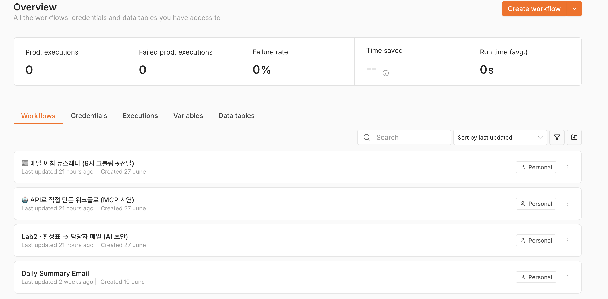
[CAP-LAB1-S4] http://localhost:5678 에디터 진입 — 워크플로 목록(Claude Code가 API로 만든 워크플로들이 그대로 보인다)
⚠️ ⑤ 막히면: 화면이 안 뜨면 → 터미널에서 n8n이 아직 떠 있는지 확인(꺼졌으면 Step 3 재실행). 사내망 http 접속이 로그인에서 막히면 강사에게 손(보안 쿠키 설정은 당일 확인).
Step4=브라우저로 localhost:5678 열기. 브라우저 열기는 사용자 몫(Claude Code 불가). Setup Wizard/로그인 화면 뜨면 통과. 안 뜨면 n8n이 살아있는지·포트 확인. 보안쿠키 막힘은 당일 확인 톤.
👤
Lab1 · Step 5 — Setup Wizard 로 Owner 계정 을 만든다
첫 화면에서 이메일·비밀번호를 입력하면 그게 이 인스턴스의 첫 계정 = Owner입니다.
1 ② 클릭경로 — Setup Wizard 화면 → 이메일·이름·비밀번호 입력 → Next/Finish .UI 라벨은 버전마다 다를 수 있음 — 당일 본인 화면 기준.
2 첫 계정 = Owner — 이 계정이 인스턴스 관리자(Owner)입니다. 워크북 빈칸: ____ 계정.
3 에디터 진입 — 계정 생성 후 빈 워크플로 캔버스가 나오면 성공.
💾 ④ ✅ 확인 포인트: Owner 계정으로 에디터에 진입 하면 통과. 이 계정·워크플로는 ~/.n8n 폴더에 저장됩니다. 워크북 빈칸: 데이터 폴더 = ~/.____.
ℹ️ ⑤ 막히면: Setup Wizard가 안 보이고 로그인만 뜨면 → 이미 Owner가 생성된 인스턴스(~/.n8n 잔존). 기존 계정으로 로그인하세요.
Step5=Setup Wizard에서 이메일·비번 입력=첫 계정 Owner→에디터 진입. Owner·데이터는 ~/.n8n 저장. 워크북 빈칸(Owner·~/.n8n) 채우기. 막힘=이미 생성됨→로그인. UI 라벨은 당일 확인 톤(브라우저 열기·Owner 입력은 사용자 몫).
✅
Lab1 · Step 6 — Manual Trigger 1개를 실행해 녹색 확인
설치가 끝났는지 가장 빠르게 확인하는 방법 — 빈 워크플로에 트리거 하나 넣고 실행해 봅니다.
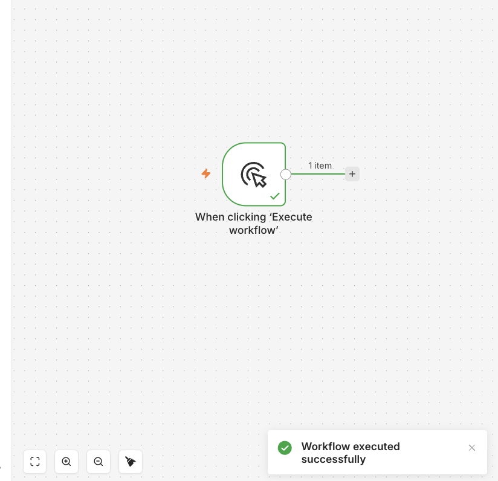
[CAP-LAB1-S6] Manual Trigger 실행 → 노드 녹색 체크 + "Workflow executed successfully" 토스트
🎉 ④ ✅ 확인 포인트(Lab1 통과): 실행 후 노드에 녹색 체크 가 뜨고, ~/.n8n 폴더가 생긴 걸 확인하면 Lab1 완료 입니다.
⚠️ ⑤ 막히면: 실행이 빨강이면 에러 메시지를 그대로 Claude Code에 붙여 "왜 났고 어떻게 고쳐?"라고 묻습니다. 노드 추가 버튼이 안 보이면 캔버스 빈 곳을 클릭해 보세요.
Step6=Manual Trigger 추가→실행→녹색 체크면 Lab1 통과. New→+(Add node)→Manual Trigger→Execute(버튼 위치는 당일 확인). ~/.n8n 생성 확인. 빨강이면 에러를 Claude Code에. 여기까지가 Lab1 완료.
🧱
이 4개 단어 만 알면 워크플로를 읽을 수 있습니다
트 트리거 (Trigger) — 흐름을 시작 시키는 사건.예: 매일 09:00 실행(Schedule), 외부 호출 수신(Webhook). "언제 켜지나 = 트리거"
액 액션 (Action) — 실제로 일을 수행 하는 노드.예: 구글시트에 행 추가, Gmail로 메일 발송.
노 노드 (Node) — 하나의 블록 . 트리거도 액션도 모두 노드.노드 하나 = 한 가지 일. 선으로 이으면 워크플로.
분 조건분기 (Branch) — 조건에 따라 갈라짐 .예: 매출 목표 미달이면 이쪽, 아니면 저쪽(IF). M5에서 본격.
"매일 09:00에 워크플로를 자동으로 시작"하는 것은 무엇인가요?
A. 트리거 — 흐름을 시작시키는 사건
B. 액션 — 실제로 일을 수행하는 노드
C. 조건분기 — 조건에 따라 갈라짐
D. 노드가 아니다
정답: A. 정해진 시각에 흐름을 시작 시키는 것은 트리거(Schedule Trigger)입니다. 메일 발송·시트 쓰기처럼 일을 수행 하는 것이 액션입니다.
흐름을 읽는 네 단어: 트리거(시작)·액션(수행)·노드(블록)·조건분기(갈림길). 신규 4개가 인지부하 상한이라 더 얹지 않는다.
🧠
n8n-MCP 를 붙이면 노드를 정확히 조회합니다Claude Code가 노드명·파라미터를 "기억"에 의존해 지어내면 환각이 납니다. n8n-MCP는 실제 노드 정보를 조회해 그 환각을 줄입니다.
🌫️
MCP 없이
"Google Sheets 노드 파라미터가 아마 이럴 거야" → 지어낸 노드명·필드 로 에디터에서 에러.
✅
n8n-MCP 연결
"Google Sheets 트리거 노드의 정확한 파라미터 알려줘" → 실제 노드 정보 조회 → 에디터에서 그대로 동작.
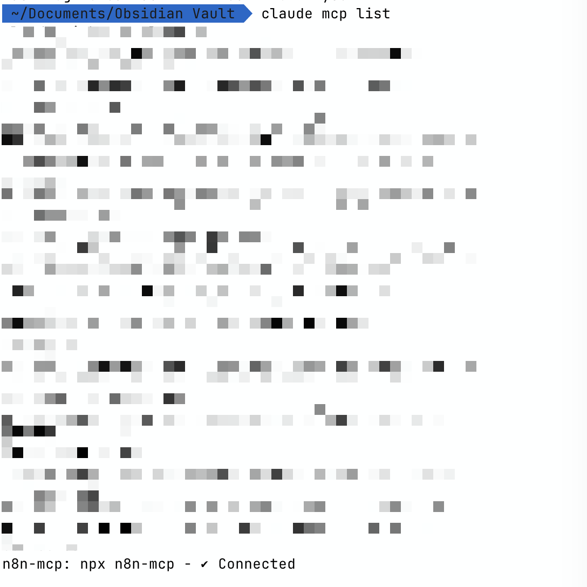
[CAP-04-mcp-node] claude mcp list → n8n-mcp ✔ Connected (연결 확인). 이 상태에서 Claude Code가 n8n-MCP로 정확한 노드 정보를 조회한다.
⧉ 복사
claude mcp add n8n-mcp -e MCP_MODE=stdio -e LOG_LEVEL=error -e DISABLE_CONSOLE_OUTPUT=true -- npx n8n-mcp
터미널에서 한 번만 등록 → Claude Code 재시작 → claude mcp list 에서 n8n-mcp ✔ Connected 확인. 윈도우 PowerShell은 각 -e ... 를 따옴표로.
🔑 작은 노트: API 키 없이도 노드 조회·검증 툴이 작동합니다(이 실습엔 충분). 워크플로를 MCP가 직접 생성/실행까지 하게 하려면 N8N_API_URL·N8N_API_KEY를 추가하세요.
ℹ️ ⚠️ 당일 확인: n8n-MCP의 문서 동기화·무료 한도는 변동 도메인 — 강의 직전 라이브 1회 조회로 최신 동작을 확인합니다.
n8n-MCP=Claude Code에 붙이는 노드 두뇌. 없으면 노드명·파라미터를 지어내 환각, 붙이면 실제 조회로 정확. 등록 명령=claude mcp add n8n-mcp -e MCP_MODE=stdio -e LOG_LEVEL=error -e DISABLE_CONSOLE_OUTPUT=true -- npx n8n-mcp(한 번만)→재시작→claude mcp list에서 ✔ Connected. 윈도우 PowerShell은 -e를 따옴표로. API 키 없이도 조회·검증 작동(실습 충분), 직접 생성/실행까지면 N8N_API_URL·N8N_API_KEY 추가. 동기화·한도는 당일 확인 각주. 노드 1개 라이브 조회로 신뢰 보여주기.
🔑
심화 — MCP 가 워크플로를 직접 만들기 (n8n API 키)
문서모드(노드 조회·검증)까지는 API 키가 필요 없습니다 . MCP가 워크플로를 n8n에 직접 생성/실행 하게 하려면 n8n API 키 가 필요합니다.
🛠️
n8n API 키
n8n 자체를 바깥에서 제어 하는 키 — MCP가 n8n에 워크플로를 직접 만들고 실행하게 해줍니다.
🤖
Anthropic API 키 (≠)
워크플로 안 AI 노드를 구동 하는 키 — n8n API 키와는 완전히 다른 키 입니다. 혼동 금지.
발급 절차: n8n 에디터 → Settings → n8n API → Create an API key → 복사(1회만 표시). (메뉴 위치는 버전별로 다를 수 있어 당일 확인)
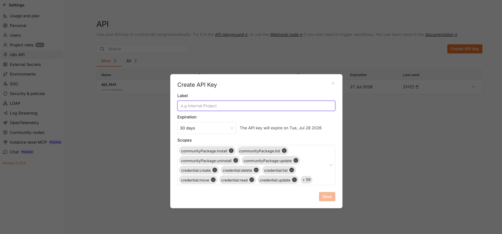
Settings → n8n API → Create API Key (Label·Expiration·Scopes). 발급 후 키를 복사해 MCP API 모드에 넣는다.
⧉ 복사
claude mcp add n8n-mcp -e MCP_MODE=stdio -e LOG_LEVEL=error -e DISABLE_CONSOLE_OUTPUT=true -e N8N_API_URL=http://localhost:5678 -e N8N_API_KEY=발급받은키 -- npx n8n-mcp
API 모드로 재등록 → Claude Code 재시작 → "이 워크플로 n8n에 직접 만들어줘" → 에디터에 바로 생성 됩니다.
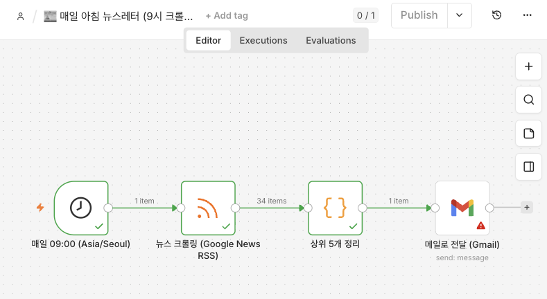
[CAP-LAB2-MCP-DIRECT] Claude Code가 n8n API로 직접 생성 → 매일 09:00 → RSS 크롤링(34건) → 상위 5개 정리 → 메일 전달 . Schedule·RSS·Code 노드 실행 녹색(Gmail만 자격증명 필요)
⚠️ ⚠️ 주의: n8n API 키는 n8n 전체를 제어 합니다 — 유출 금지·필요 없으면 삭제하세요. 기본 실습(Lab2~5)은 이 키 없이도 됩니다(심화·선택). 메뉴 위치·동작은 당일 dry-run으로 1회 확인.
심화·선택 슬라이드. 문서모드(노드 조회·검증)는 API 키 불필요, MCP가 워크플로를 n8n에 직접 생성/실행하려면 n8n API 키 필요. ★키 구분=n8n API 키(n8n 자체를 바깥에서 제어) ≠ Anthropic API 키(워크플로 안 AI 노드 구동), 완전히 다른 키. 발급=n8n 에디터 Settings → n8n API → Create an API key → 복사(1회 표시, 메뉴 위치 버전별 당일 확인). API 모드 재등록=claude mcp add n8n-mcp -e MCP_MODE=stdio -e LOG_LEVEL=error -e DISABLE_CONSOLE_OUTPUT=true -e N8N_API_URL=http://localhost:5678 -e N8N_API_KEY=발급받은키 -- npx n8n-mcp → 재시작 → "이 워크플로 직접 만들어줘". 주의=키는 n8n 전체 제어라 유출 금지·미사용시 삭제, Lab2~5는 키 없이도 됨. 당일 dry-run 확인 톤, 과장 금지.
🍴
n8n에서 'MCP' 는 세 가지 — 헷갈리지 말 것
검색하면 셋 다 나옵니다. 오늘 우리가 쓰는 건 ①뿐 입니다. 나머지 둘은 "있다"만 알고 넘어갑니다.
🧠
① 이 강의의 n8n-MCP ★ 우리가 쓰는 것
커뮤니티 czlonkowski/n8n-mcp — Claude Code에 붙이는 도구 .노드 정보 조회 · 워크플로 검증 (환각↓). 만드는 동안 돕는 두뇌.
🖥️
② n8n 공식 instance-level MCP
n8n 자체를 MCP 서버로 노출 해, 외부 AI가 내 n8n을 도구처럼 호출.(출처·동작 당일 확인)
⚡
③ MCP Server Trigger 노드
워크플로 안 에 두는 MCP 트리거 노드 — 워크플로를 MCP 도구로 띄움.(출처·동작 당일 확인)
🎯 기억할 한 줄: 검색하면 셋 다 나오니, 오늘 쓰는 건 ① (커뮤니티 n8n-MCP = Claude Code의 노드 두뇌)입니다. ②③은 "있다"만 알면 충분합니다.
같은 'MCP'가 셋이라 혼동 차단용. ①커뮤니티 czlonkowski/n8n-mcp=Claude Code에 붙여 노드 조회·워크플로 검증(★오늘 쓰는 것) ②n8n 공식 instance-level MCP=n8n을 MCP 서버로 노출 ③MCP Server Trigger 노드=워크플로 안 MCP 트리거. ②③은 출처·동작 당일 확인 톤, 깊이 안 들어감. "검색하면 셋 다 나오니 오늘은 ①"만 각인.
🔀
스케줄 → 구글시트 편성표 → 담당자 메일
노드 3개를 연결한 첫 워크플로 — 스케줄로 켜고, 시트를 읽고, 메일로 내보냅니다. (실습 Lab2)
flowchart LR
A["⏰ Schedule Trigger
트리거(시작) → 액션(수집) → 액션(발송) — 가장 기본이 되는 3노드 패턴
① Schedule Trigger
Days, 09:00. 타임존 = Asia/Seoul (설치 시 환경변수로 지정).
② Google Sheets · Get Row(s)
"편성표" 시트, 오늘 날짜 필터 → 담당자 메일 컬럼.
③ Gmail · Send
To = 담당자, Subject = "오늘 편성표", Body = {{ $json.방송명 }} .
④ Execute → Active
세 노드 모두 녹색 + 메일 1통이면 성공 → Active 토글.
Lab2 설계도: 스케줄→구글시트 편성표→담당자 메일 3노드. worked로 강사가 먼저 보여주고, 다음 슬라이드에서 노드별 순차 빌드 원칙으로 각자 만든다.
🔢
거대 JSON 통째 금지 — 노드별 순차 빌드 + 즉시 검증
⚠️
❌ 거대 JSON 한 번에 import
AI가 만든 워크플로 JSON을 통째로 붙이면, 한 곳이 틀려도 어디서 깨졌는지 모릅니다 (줄줄이 에러). 버전 차이로 import 실패도.
✅
✅ 노드별 순차 빌드
"이 3노드 JSON 초안 만들어줘" → 노드 1개 붙이고 → 즉시 실행 → 녹색 확인 → 다음 노드 . 깨지면 그 노드만 고침.
🔁 루프: n8n-MCP로 정확한 노드 조회 → 한 노드 빌드 → 에디터에서 실행·검증 → 다음. AI 초안은 가설 , 진실은 에디터 실행 결과 입니다.
"Claude Code가 만든 거대한 워크플로 JSON은 한 번에 통째로 import하는 것이 가장 안전하다."
참
거짓
거짓. 통째 import는 한 곳만 틀려도 어디서 깨졌는지 알기 어렵고 버전 차이로 실패할 수 있습니다. 노드별로 빌드하고 즉시 실행·검증 하는 것이 정석입니다.
거대 JSON 통째 import 금지 → 노드별 순차 빌드+즉시 검증. AI 초안=가설, 진실=에디터 실행 결과. cascade 에러 회피. 2일차 본실습까지 일관되는 원칙.
🚩
여기까지 — 첫 워크플로 가 내 노트북에서 돌았나요?
⭕ ⭕ ⭕ 노드별로 빌드·검증 해 실행했다
체크포인트 · M3 기초+첫 워크플로
앞의 트리거/노드 문항을 먼저 풀고 눌러 보세요.
단원 통과 확인
M3 마무리 체크포인트: 4개 개념 구분·MCP 조회·첫 워크플로 노드별 실행. 미통과면 assets의 lab1-편성표메일.json import로 합류시키되 노드는 직접 만지게.
▶️
▶ 지금 실습 — 워크북 Lab 2 를 펴세요스케줄 → 구글시트 편성표 읽기 → 담당자 메일 . n8n-MCP를 붙여 정확한 노드 정보로 초안을 만들고, 에디터에서 노드별로 import·실행 합니다(혼합 방식). 거대 JSON을 한 번에 넣지 않습니다.
🎯
이번 랩에서 만드는 것
3노드 워크플로(Schedule → Sheets → Gmail). n8n-MCP 연결 + 노드별 검증.
✅
완성 모습
3노드가 전부 녹색 + 받은편지함에 "오늘 편성표 …" 메일 1통.
📖 손으로 채우는 자료: 워크북 Lab 2의 표현식 빈칸({{ $json.____ }})을 직접 채우며 따라오세요. 막히면 에러를 Claude Code에.
Lab2 진입 안내. 스케줄→편성표→담당자 메일 3노드. n8n-MCP로 정확 조회+노드별 import·실행(혼합). 목표=3노드 녹색+메일 1통. 워크북 표현식 빈칸 채우기. 거대 JSON 통째 금지 원칙 유지.
🧠
Lab2 · Step 1 — n8n-MCP 가 붙었는지 조회로 확인
Claude Code에 n8n-MCP가 연결됐는지, 노드 정보가 실제로 조회되는지 1건으로 확인합니다.
⧉ 복사
Schedule Trigger 노드의 정확한 파라미터 알려줘.
그리고 Google Sheets 읽기 노드 파라미터도 알려줘.
② 무엇을 하나
위 질문을 Claude Code에 입력 → n8n-MCP가 실제 노드명·파라미터 를 조회해 답하는지 본다. 오늘 쓰는 건 커뮤니티 n8n-mcp.
④ ✅ 확인 포인트
"기억으로 추정"이 아니라 조회된 정확한 노드명·필드 가 돌아오면 연결 정상.
⚠️ ⑤ 막히면: 조회 없이 일반 설명만 나오면 n8n-MCP 미연결일 수 있음 → 강사에게 손. (동기화·무료 한도는 변동 도메인 — 당일 확인.)
Step1=n8n-MCP 연결 확인. "Schedule Trigger/Google Sheets 파라미터 알려줘" 1건으로 실제 조회 여부 판별. 조회된 정확 노드명이 오면 정상. 미연결=일반 설명만. 동기화·한도는 당일 확인 톤. 커뮤니티 n8n-mcp.
🤖
Lab2 · Step 2 — Claude Code에 3노드 워크플로 초안 을 부탁
정확한 노드 정보를 가진 상태에서, 3노드 JSON 초안을 요청합니다.
⧉ 복사
스케줄 트리거로 매일 9시(Asia/Seoul)에 구글시트 편성표를
읽어 담당자에게 메일 보내는 워크플로 JSON을 만들어줘.
노드는 Schedule Trigger → Google Sheets → Gmail 3개로.
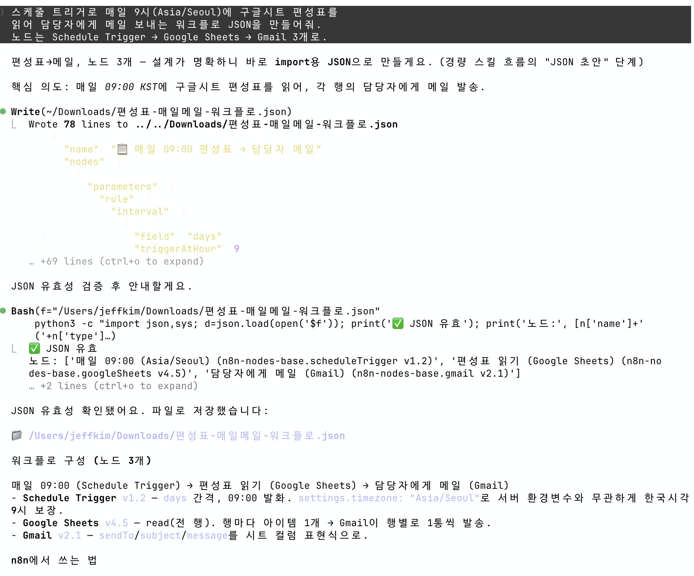
[CAP-LAB2-S2] 위 프롬프트로 3노드 워크플로 JSON 초안 이 생성된 화면(매일 9시·편성표·담당자 메일). 초안=가설 → 다음 step부터 노드별 import·실행 검증.
④ ✅ 확인 포인트
3개 노드가 포함된 JSON 초안 (또는 노드별 안내)이 나오면 통과.
⑤ 막히면
AI 초안은 가설 입니다 — 통째로 믿지 말고 다음 Step부터 노드별로 import·실행 검증 합니다.
Step2=3노드 워크플로 JSON 초안 요청(프롬프트 복사). 매일 9시 Asia/Seoul·편성표·담당자 메일·3노드 명시. 초안=가설, 검증은 다음 step의 노드별 import·실행. 거대 JSON 통째 신뢰 금지.
📥
Lab2 · Step 3 — 에디터에 import 한다
초안을 에디터로 가져옵니다. (import 후에도 노드별로 실행·검증하는 혼합 방식을 유지)
🖱️
② 클릭경로
에디터 우측 상단 ⋮ (더보기) → Import from File (또는 Import from URL) → 파일 선택.메뉴 라벨·위치는 버전마다 다름 — 당일 본인 화면 기준.
✅
④ ✅ 확인 포인트
캔버스에 노드 3개가 선으로 연결 되어 나타나면 통과.
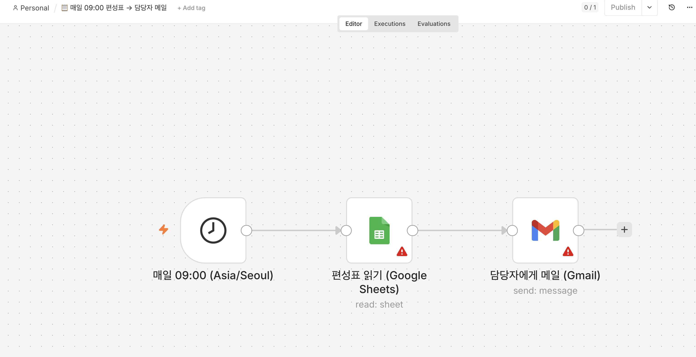
[CAP-LAB2-S3] ⋮ → Import from File 로 3노드(Schedule → Google Sheets → Gmail)가 캔버스에 들어온 모습. ★Sheets·Gmail 노드의 빨간 ⚠️ = 자격증명 미설정 — 다음 step에서 OAuth 연결하면 사라진다.
⚠️ ⑤ 막히면: import가 버전 차이로 실패하면 → 노드를 직접 하나씩 추가 (Add node)해도 됩니다. 자격증명·시트ID는 본인 것으로 교체.
Step3=⋮→Import from File로 초안 import. 메뉴 위치는 당일 확인. 캔버스에 3노드 연결되면 통과. import 실패=버전 차이→노드 직접 추가로 우회. 이후에도 노드별 실행 검증 유지.
⏰
Lab2 · Step 4 — Schedule Trigger 를 매일 9시로 설정
트리거 노드를 열어 매일 09:00 실행으로 맞춥니다. 타임존은 설치 때 지정한 Asia/Seoul.
1 ② 클릭경로 — Schedule Trigger 노드 더블클릭 → 파라미터 패널.
2 반복 설정 — Trigger Interval = Days , 시각 = 09:00 .파라미터 라벨은 버전마다 다름 — 당일 본인 화면 기준.
3 타임존 — 설치 시 GENERIC_TIMEZONE=Asia/Seoul로 지정한 값이 기준.
✅ ④ ✅ 확인 포인트: 노드를 실행(Test step) 했을 때 녹색이고, 다음 실행 시각이 09:00(한국시간) 으로 보이면 통과. 워크북 빈칸: 트리거 노드명 = ____.
⚠️ ⑤ 막히면: 실행 시각이 이상하면 → 타임존 미설정. 터미널을 GENERIC_TIMEZONE=Asia/Seoul npx n8n으로 재실행했는지 확인.
Step4=Schedule Trigger 더블클릭→Days·09:00·Asia/Seoul. 파라미터 라벨은 당일 확인. Test step 녹색+다음 실행 09:00이면 통과. 시각 이상=타임존 미설정. 타임존은 설치 환경변수가 기준.
📄
Lab2 · Step 5 — Google Sheets 로 편성표를 읽는다
Get Row(s)로 데모 시트 "편성표"를 읽어, 행이 테이블로 보이는지 확인합니다.
1 ② 클릭경로 — Google Sheets 노드 더블클릭 → Operation = Get Row(s) → 시트 선택.
2 자격증명 — Credential = Sign in with Google (OAuth2) 연결 → 문서/탭에서 편성표 선택.
3 실행해 확인 — 노드 Test step → 오늘 편성표 행(시간·방송명·담당자·담당자메일)이 테이블로 보이는지.
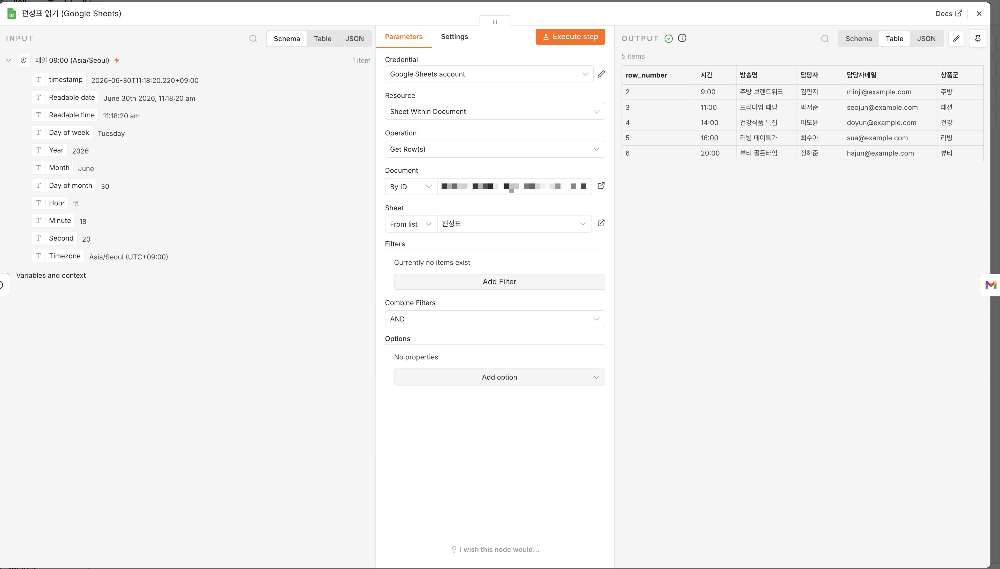
[CAP-LAB2-S5] 편성표 읽기 노드 Execute step → OUTPUT에 편성표 5행이 테이블로(시간·방송명·담당자·담당자메일·상품군). ★Gmail 표현식은 이 헤더명과 정확히 맞춰야 함 — 예: {{ $json['담당자메일'] }}.
⚠️ ⑤ 막히면: "credential not found" → 구글 인증 미연결. Sign in with Google 로 연결(사내 OAuth가 막히면 공용 데모 시트/수신함으로). 시트가 안 보이면 문서 공유·탭 이름 확인.
Step5=Google Sheets Get Row(s)로 편성표 읽기. 더블클릭→Operation→Credential(Sign in with Google)→시트 선택→Test step. 행이 테이블로 보이면 통과. credential not found=OAuth 미연결(사내 막히면 공용 데모). 시트 미표시=공유·탭 확인.
📧
Lab2 · Step 6 — Gmail 노드에 표현식 을 채운다
받는 사람·제목·본문을 앞 노드의 데이터로 채웁니다. 표현식 빈칸은 직접 채워 보세요.
🖱️
② 클릭경로
Gmail 노드 더블클릭 → Operation = Send → To/Subject/본문 칸에서 표현식 토글(=) 켜고 입력.
{}
① 표현식 (빈칸 채우기)
To = ={{ $json.담당자메일 }}=오늘 편성표 - {{ $json.방송명 }}{{ $json.____ }}로 조합.
⚠️ ⑤ 막히면: 본문에 {{ $json.방송명 }} 글자 그대로 나오면 → 표현식 토글이 꺼졌거나 필드명 오타. 한글/공백 필드가 점표기로 안 잡히면 대괄호 표기 {{ $json["담당자메일"] }}. AI가 준 표현식은 대소문자·$json. 접두사를 슬쩍 틀릴 수 있으니 실행으로 검증.
Step6=Gmail Send 노드 표현식. To={{ $json.담당자메일 }}, Subject=오늘 편성표 - {{ $json.방송명 }}, 본문 조합. 표현식 토글(=) 켜기. 글자 그대로 나옴=토글 꺼짐/오타. 한글·공백 필드=대괄호 표기. AI 표현식은 실행 검증.
🐞
표현식이 이렇게 뜨면 에러 입니다 — 왜 그럴까
AI가 만든 JSON을 그대로 믿고 쓰면 자주 나오는 두 가지. 실제 강사 화면입니다.
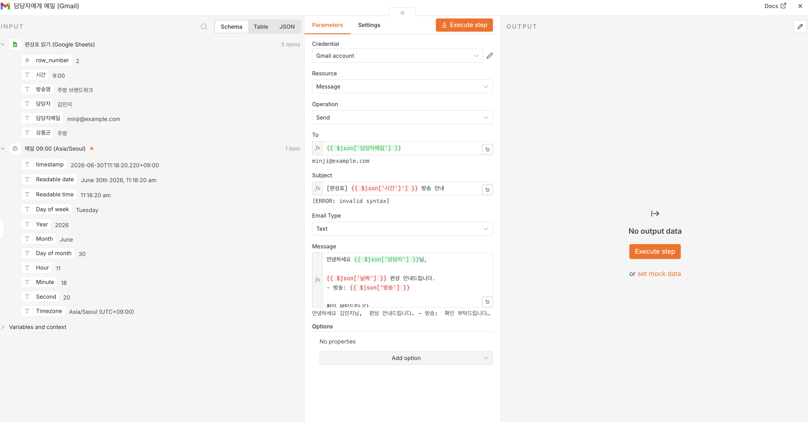
Gmail 노드 — Subject {{ $json['시간']'] }} → [ERROR: invalid syntax] , 본문 $json['날짜']·$json['방송']이 빨갛게(시트에 없는 필드).
원인 ① 필드명 환각
AI가 시트 헤더를 추측 (날짜·방송)했는데 실제 헤더는 시간·방송명 → 없는 키라 빈값 . AI 표현식은 가설 일 뿐입니다.
원인 ② 손으로 고치다 깨짐
$json['날짜']를 손으로 시간으로 바꾸다 $json['시간']'] 처럼 따옴표·대괄호가 남음 → 구문 오류 .
✅ 고치는 법: Sheets 노드를 먼저 Execute → 왼쪽 INPUT 패널의 실제 필드를 드래그 (타이핑 ✗)하면 {{ $json['시간'] }}이 정확히 들어갑니다. = 강의의 "노드별 순차 빌드 + 즉시 실행 검증" 그대로예요.
막힘 카드 "이러면 에러". 원인①=AI 필드명 환각(날짜/방송 추측 vs 실제 시간/방송명)→빈값. 원인②=한글 키 대괄호식을 손으로 고치다 ']' 남아 invalid syntax. 고치는 법=Sheets 먼저 실행→INPUT 필드 드래그(타이핑X)→정확한 표현식. 노드별 순차 빌드+즉시 실행의 근거 사례. 실제 강사 dry-run 화면.
✅
Lab2 · Step 7 — 실행해 녹색 + 메일 도착 확인
세 노드를 Schedule → Sheets → Gmail 순서로 연결하고, 수동 실행해 메일이 오는지 봅니다.
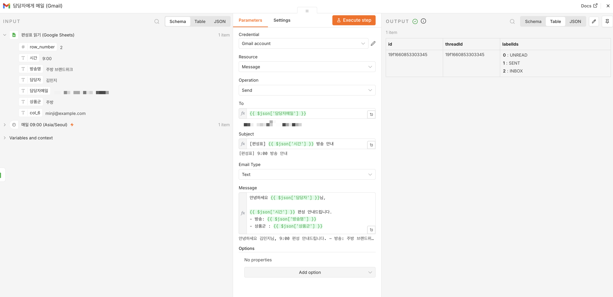
① 실행 성공 — OUTPUT에 SENT·INBOX (발송됨). 표현식이 헤더(시간·방송명·상품군)와 맞아 빨간 줄이 사라짐.
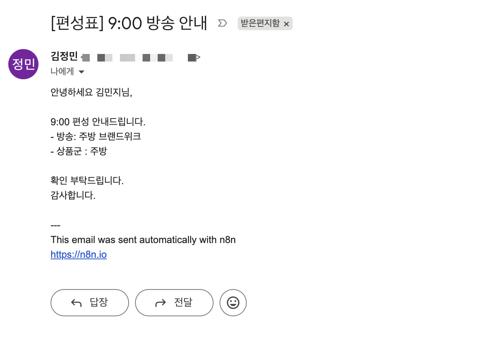
② 받은편지함 도착 — [편성표] 9:00 방송 안내 , 본문에 {{ }}가 아니라 실제 값 (김민지·9:00·주방 브랜드워크·주방).
🎉 ④ ✅ 확인 포인트(Lab2 통과): 노드 3개 전부 녹색 + 메일 본문에 {{ }} 글자가 아니라 실제 값 이 들어가고 + 메일 1통이 도착하면 Lab2 완료 .
⚠️ ⑤ 막히면: n8n-MCP가 준 노드명을 대소문자 틀리게 받아썼으면 에디터 실행으로 잡아 정확 노드명으로 교체. 막히면 assets/import/lab1-편성표메일.json import로 합류(자격증명·시트ID 교체).
Step7=세 노드 연결→Execute Workflow→메일 도착. 3노드 녹색+실제 값 메일 1통이면 Lab2 완료. 노드명 대소문자 오류=에디터 실행으로 교체. 막히면 assets lab1-편성표메일.json import 합류(자격증명·시트ID 교체).
❓
만들기 전에 — "무엇을 자동화할지" 를 먼저 정합니다
노드부터 붙이면 엉뚱한 걸 만들기 쉽습니다. 말로 명확히 한 다음에 빌드해야 AI도 맞는 노드를 만듭니다.
핵심 비유 🧩 — PRD 없이 AI에게 맡기는 건 목적지 없이 택시를 타는 것 입니다. "알아서 좋은 데로" 하면 엉뚱한 곳에 내립니다. 자동화 PRD = 목적지·경유지를 적은 운행 지시서 .
🚫 오개념 교정: "AI가 알아서 해주니 PRD는 불필요" → 아니요. PRD가 없으면 AI도 엉뚱한 노드를 만듭니다(가비지 인·가비지 아웃).
빌드 전에 "무엇을 자동화?"를 말로 명확히. PRD 없는 AI 위임=목적지 없는 택시. "AI가 알아서"는 오개념(가비지 인 가비지 아웃). 다음 슬라이드에서 경량 스킬 /n8n-automation-prd로 PRD를 한 번에 끌어낸다.
🪄
5섹션을 한 번에 뽑고, 단계로 안전하게 짓는다자동화 설계 전용 경량 스킬 입니다. 질문을 하나씩 캐묻지 않고 5섹션 PRD를 한 턴에 만들어 줘요 — 비는 칸만 한꺼번에. 단, 핵심 의도와 트리거·출력 같은 결정적 선택은 꼭 확인 합니다(경량이어도 엉뚱한 걸 만들지 않게).
⧉ 복사
/n8n-automation-prd
# "○○를 자동화하고 싶어" 한 줄이면 시작
# → 5섹션 PRD(트리거·입력·처리·출력·예외)를 한 번에 + n8n 6레이어 매핑
# → 단계 게이트: ① 설계 확정 → ② JSON 초안 → ③ 실제 생성(별도 확인)
🖼️ [CAP-05-prd-skill · 강사 붙여넣기] 경량 스킬이 5섹션 PRD를 한 번에 + 6레이어 매핑까지 출력한 화면
무엇: 한 턴에 5섹션 PRD + 6레이어 매핑 표 가 나오는 화면 / 시점: Lab3 dry-run / alt: "경량 스킬로 자동화 PRD 한 번에 도출"
왜 경량인가
범용 brainstorming은 한 질문씩·접근법 비교로 토큰을 많이 씁니다. 이 스킬은 n8n 전용이라 보통 1턴 에 끝나요.
단계 게이트 = 안전
한 번의 "OK"로 실제 생성까지 가지 않습니다. 설계 확정 → JSON 초안 → 실제 생성 을 끊어서. 실습 기본은 import .
🌿 언제 brainstorming? 정말 크고 모호한 설계(여러 제품·복잡한 정책)면 그때만 /superpowers:brainstorming으로 올립니다. 보통의 업무 자동화는 이 경량 스킬로 충분합니다.
핵심 교체: brainstorming(무겁고 토큰多·질문 하나씩) → 경량 전용 스킬 /n8n-automation-prd(5섹션 한 턴·빈칸만 한꺼번에). 안전장치는 HARD-GATE가 아니라 단계 게이트(설계확정→JSON초안→실제생성, 실습 기본 import). brainstorming은 정말 복잡한 설계의 폴백으로만. "전용 스킬이 가볍고 정확"이 AI-native 메시지.
📋
모든 자동화는 이 5칸 으로 적힙니다
트 ① 트리거 (언제) 스케줄? 외부 호출? 폼 제출? — 무엇이 흐름을 켜는가.
입 ② 입력 (무엇을 받나·형식) 시트/메일/HTTP 등 어디서 어떤 데이터를 가져오나.
처 ③ 처리 (변환·판단·AI) 필터·집계·매핑, 그리고 필요하면 AI 판단(분류·요약).
출 ④ 출력 (어디로) 시트 쓰기/메일/Slack 등 결과를 어디로 보내나.
예 ⑤ 예외·한도 (실패·재시도·비용·개인정보) 실패하면? 발송 한도·API 비용·민감정보는?
👥 짝 리뷰: 옆 사람 PRD에서 가장 자주 비는 칸은 ⑤ 예외·한도 입니다. 서로 1개씩 비었는지 지적해 주세요.
PRD 5섹션: 트리거·입력·처리(변환/AI)·출력·예외/한도. ⑤가 가장 자주 빈다 → 짝 리뷰로 보완. 이 5칸이 다음 슬라이드에서 n8n 6레이어로 매핑된다.
📚
PRD 5섹션 → n8n 6레이어 로 1:1 매핑
자동화 PRD
① 트리거 언제 켜지나
② 입력 무엇을 받나
③ 처리 변환 · 판단(AI)
④ 출력 어디로 보내나
⑤ 예외·한도 실패 · 비용
n8n 6레이어
트리거 Schedule/Webhook/Form
수집 Sheets/HTTP/Gmail
가공 Code/Set/Filter/Merge
AI 판단 ★ Anthropic Chat Model(API 키)
액션·알림 Sheets/Slack/Gmail
에러핸들링 Error Trigger/IF/Stop
PRD ③ 처리는 "가공"과 "AI 판단" 두 레이어로 갈라집니다 — AI 판단(★)은 2일차에 회사 API 키로.
PRD 5섹션을 n8n 6레이어로 매핑(처리가 가공+AI판단으로 분화). 이 매핑이 빌드의 설계도. AI 판단 레이어가 ④ Anthropic 노드(API 키)이고 2일차 핸즈온 대상. 이 다이어그램은 day2 M7에서도 재사용.
📺
예시 — 방송 끝나면 실적을 담당 MD에게 (worked)
경량 스킬이 한 번에 뽑은 실제 PRD입니다. 내 업무로 바꾸기 전에 한 번 같이 읽어요.
트 ① 트리거 — 매일 방송 종료 후 23:00 (Schedule)
입 ② 입력 — 주문·매출 시트 + 편성표(방송별 담당 MD)
처 ③ 처리 — 방송별·상품군별 매출 집계 , 목표 대비 달성률
출 ④ 출력 — 담당 MD 슬랙 + 요약 시트 기록
예 ⑤ 예외 — 데이터 미수신·매출 0건·발송 실패 시 알림
📚 6레이어 매핑: Schedule → Sheets×2(매출·편성표) → Summarize + Merge → Slack + Sheets → Error Trigger.
➕ 추가 예시 2개(워크북 Lab3): 경쟁사 가격 모니터링 (HTTP·IF로 가격 역전 감지), 고객 리뷰 VOC AI 분류 (Anthropic 노드로 긍/부정 분류 → 부정만 담당팀). 셋 중 골라 실습해도 됩니다.
홈앤쇼핑 worked example=방송실적 리포트(스케줄·집계·다중출력). 경량 스킬이 한 턴에 뽑은 PRD를 같이 읽고, Lab3에서 각자 본인 업무 또는 제시된 3예시(방송실적·경쟁사 가격·VOC AI분류) 중 하나로. 경쟁사=웹스크래핑(robots 주의), VOC=AI 노드(2일차 연결).
▶️
▶ 지금 실습 — 워크북 Lab 3 을 펴세요노드를 만들기 전에 , 경량 스킬 /n8n-automation-prd로 자동화 PRD 5섹션 을 한 번에 뽑아 워크북에 옮기고 n8n 6레이어에 매핑합니다. 이 랩은 설계까지 만 — 실제 빌드는 M5에서.
🎯
이번 랩에서 만드는 것
내 반복업무(또는 제시된 3예시) 1개에 대한 PRD 1장 + 6레이어 매핑표 + 짝 리뷰 1개.
✅
완성 모습
PRD 5섹션 전부 채움 + 6레이어 후보 노드 채움 + 짝 리뷰 1개 주고받음.
🚦 단계 게이트: 이 랩은 설계 확정 까지가 산출물 — 실제 워크플로 생성은 다음 단계입니다. 스킬이 5섹션을 한 번에 주면, 비는 칸만 채워 확정하세요.
Lab3 진입 안내. 빌드 전 경량 스킬 /n8n-automation-prd로 PRD 5섹션 한 번에+6레이어 매핑. 단계 게이트=설계 확정까지가 이 랩 산출물(실제 생성은 M5). 산출물=PRD 1장+매핑표+짝 리뷰. 본인 업무 또는 제시 3예시 중 택1.
🪄
Lab3 · Step 1 — /n8n-automation-prd 를 호출한다
자동화할 업무를 한 줄로 제시합니다 — 내 업무 또는 아래 우리 회사 예시 중 하나.
⧉ 복사
/n8n-automation-prd
# 주제 한 줄 — 내 업무 또는 아래 중 하나:
# · "방송 끝나면 실적을 담당 MD에게 자동 정리·발송"
# · "경쟁사 가격을 매일 체크해 우리보다 싸지면 알림"
# · "고객 리뷰를 AI로 긍/부정 분류해 부정만 담당팀 알림"
② 무엇을 하나
Claude Code에 위 명령 입력 → 주제 한 줄 만 제시(질문 안 기다려도 됨).
④ ✅ 확인 포인트
스킬이 5섹션 PRD를 한 번에 펼치고, 비는 칸만 모아 물어보면 정상.
⚠️ ⑤ 막히면: 명령이 안 먹으면 스킬 설치/이름을 강사와 확인. 5섹션이 한 번에 안 나오면 "5섹션 PRD로 한 번에 정리해줘"라고 요청.
Step1=/n8n-automation-prd 호출. 주제 한 줄(내 업무 또는 제시 3예시: 방송실적·경쟁사 가격·VOC AI분류). 5섹션 한 번에+비는 칸만 묶어 질문=정상. 미작동=설치/이름 확인. 한 질문씩 캐물으면 "5섹션으로 한 번에" 요청.
🧭
Lab3 · Step 2 — 5섹션을 한 번에 받고 빈칸만 채운다
경량 스킬은 추론 가능한 칸은 (추정)으로 미리 채우고, 비는 칸만 한꺼번에 물어봅니다. 한 질문씩 왕복하지 않아요.
🖼️ [CAP-LAB3-S2 · 강사 dry-run 캡처] 5섹션 PRD가 한 번에 펼쳐지고 비는 칸만 묶어 묻는 화면
무엇: 5섹션이 한 화면에 + (추정) 표시 + 비는 칸만 한꺼번에 질문 / 시점: Lab3 dry-run / alt: "경량 스킬 5섹션 한 번에"
② 무엇을 하나
스킬이 묶어 물은 빈칸만 한 번에 답한다(보통 ⑤ 예외·한도).
④ ✅ 확인 포인트
5섹션이 채워지고 (추정)이 사라지면 정상. ★스킬이 되짚는 "핵심 의도가 이게 맞나요?" 에 답해 의도를 확정.
🚫 ⑤ 막히면(오개념): "AI가 알아서 해주니 PRD 불필요" → 아니요. 설계가 흐릿하면 AI도 엉뚱한 노드를 만듭니다(가비지 인·가비지 아웃). 설계를 확정한 뒤 빌드합니다.
Step2=5섹션 한 번에 받기. 스킬이 추론 칸은 (추정), 비는 칸만 한꺼번에 질문 → 빈칸만 답. 5섹션 다 채워지고 (추정) 사라지면 정상. 오개념="AI가 알아서"→가비지 인 가비지 아웃. 설계 확정 후 빌드(단계 게이트).
📋
Lab3 · Step 3 — PRD 5섹션 을 완성한다
스킬이 한 번에 준 5섹션을 워크북 표에 옮겨 적습니다(빈칸은 직접 채움).
🖼️ [CAP-LAB3-S3 · 강사 dry-run 캡처] PRD 5섹션이 채워진 결과 화면
무엇: 경량 스킬 결과로 PRD 5섹션이 채워진 문서 화면 / 시점: Lab3 dry-run / alt: "자동화 PRD 5섹션 완성"
✅ ④ ✅ 확인 포인트: 5칸이 모두 한 줄 이상 채워지면 통과. 원하면 스킬에 "이 PRD를 .md로 저장해줘"라고 하면 파일로도 남겨요. ⑤ 가장 자주 비는 칸 = ⑤ 예외·한도.
Step3=PRD 5섹션 완성(트리거·입력·처리·출력·예외). 스킬이 한 번에 준 5섹션을 워크북에 옮기고 빈칸 채우기. 5칸 다 채우면 통과. 원하면 .md 저장 요청 가능. ⑤ 예외·한도가 가장 자주 빔(다음 step 짝 리뷰로 보완).
📚
Lab3 · Step 4 — PRD를 n8n 6레이어 에 매핑한다
5섹션을 n8n 레이어로 옮기고, 각 레이어의 후보 노드를 적습니다(빈칸 채우기).
트 트리거 → 트리거 레이어 — 후보: ____ (힌트: Schedule/Webhook/Form)
입 입력 → 수집 — 후보: ____ (힌트: Sheets/HTTP/Gmail)
처 처리(변환) → 가공 — 후보: ____ (힌트: Code/Set/Filter/Merge)
AI 처리(AI) → AI 판단 — 후보: ____ (힌트: Anthropic Chat Model · 회사 API 키)
출 출력·알림 → 액션·알림 — 후보: ____ (힌트: Sheets/Slack/Gmail)
예 예외 → 에러핸들링 — 후보: ____ (힌트: Error Trigger/IF/Stop And Error)
✅ ④ ✅ 확인 포인트: 6레이어 후보 노드가 다 채워지면 통과. ③ 처리는 가공 + AI 판단 둘로 갈라집니다 — 숫자 임계값이면 IF/Filter, 자연어 분류면 Anthropic 노드(2일차).
Step4=PRD 5섹션을 n8n 6레이어로 매핑(처리=가공+AI판단 분화). 각 레이어 후보 노드 빈칸 채우기. "판단=무조건 AI"는 오개념(숫자=IF/Filter). AI 판단=Anthropic 노드(회사 API 키, 2일차).
👥
Lab3 · Step 5 — 짝 리뷰 로 빈 칸을 찾아준다
옆 사람과 PRD를 바꿔 보고, 가장 자주 비는 ⑤ 예외·한도를 점검합니다.
🔎
② 무엇을 하나
옆 사람 PRD에서 "⑤ 예외·한도"가 비었는지 1개 지적. 워크북에 짝 이름·지적 1줄 적기.
✅
④ ✅ 확인 포인트(Lab3 통과)
PRD 5섹션 + 6레이어 매핑 + 짝 리뷰 1개 주고받으면 Lab3 완료.
ℹ️ ⑤ 막히면: 지적할 게 안 보이면 → ⑤ 예외·한도(실패 시 재시도? 발송 한도? 민감정보?)를 묻는 것부터. 다음 M5 본실습에서 이 설계를 빌드로 옮깁니다.
Step5=짝 리뷰로 ⑤ 예외·한도 점검 1개 지적. 워크북에 짝 이름·지적 기록. PRD 5섹션+6레이어+짝 리뷰면 Lab3 완료. 지적 막히면 ⑤(재시도·한도·민감정보)부터. 다음 M5에서 빌드.
🍴
IF 와 Filter 는 무엇이 다른가
🔀
IF — 두 갈래
true / false 두 출력 이 생긴다. 양쪽을 각각 다르게 후속 처리할 때.
🧹
Filter — 거르기
통과 아이템만 남기고 나머지는 버린다(분기 없음).
⚠️ 흔한 실수: 매출이 "1,200,000" 처럼 문자열 이면 숫자 비교가 항상 실패합니다 → 콤마 제거 후 Number로 변환 해 비교하세요.
"통과할 아이템만 남기고 나머지는 버리되, 분기는 만들지 않는다" — 어느 노드일까요?
A. IF — true/false 두 출력으로 갈라진다
B. Filter — 조건을 통과한 항목만 남긴다
C. Schedule Trigger
D. Gmail · Send
정답: B. Filter는 통과 항목만 남기고 분기를 만들지 않습니다. 두 갈래(참/거짓)로 나누는 건 IF입니다.
IF=참/거짓 두 출력으로 분기, Filter=통과만 남기고 버림(분기 없음). 문자열 매출은 숫자 비교 실패 → 콤마 제거+Number 변환. 표현식 환각은 다음 슬라이드.
🔤
값을 꺼낼 땐 {{ $json.필드 }} — 여기 함정이 있습니다
앞 노드의 데이터를 참조하는 표현식. AI가 자주 틀리는 두 지점을 미리 알아 둡니다.
🔠
함정 ① 노드명 대소문자
노드명·필드명은 대소문자·공백까지 정확 해야 합니다. $('HTTP Request') ≠ $('http request') . AI가 살짝 바꿔 쓰면 실패.
$
함정 ② $json. 접두사
현재 아이템 값은 {{ $json.email }} 처럼 $json. 접두사 로. AI가 접두사를 빠뜨리면 값이 안 나옵니다.
🐞 AI 환각 주의: Claude Code가 표현식을 만들어 줘도 대소문자·접두사를 슬쩍 틀릴 수 있습니다. → 반드시 에디터에서 실행 해 값이 나오는지 확인하세요(가설→검증).
표현식 두 함정: ①노드명 대소문자·공백 정확 ②$json. 접두사 누락. AI가 자주 틀리니 에디터 실행으로 검증. {{ }}는 미니청크로 외재부하를 낮춰 따로 다룬다.
∑
일일매출을 상품군별 로 묶어 합산 합니다
행 단위 매출을 상품군으로 그룹핑(group)하고 매출을 합(sum)해 요약을 만듭니다.
flowchart LR
A["📄 Sheets
읽기 → 거르기 → 집계(group/sum) → 요약시트 쓰기 — 집계 파이프라인의 기본형
📊 Summarize 노드: "상품군"으로 group, "매출"을 sum → 출력키 sum_매출 . 결과를 요약시트에 Append하면 사람이 보던 합계표가 자동으로 채워집니다.
Summarize로 상품군 group + 매출 sum → 출력키 sum_매출 → 요약시트 Append. 사람이 손으로 만들던 합계표를 자동화. 다음은 이 요약을 여러 곳에 보내는 다중발송.
📧
요약을 담당자 + 팀장 에게 동시에 보냅니다
하나의 결과를 여러 수신자/채널로 내보내는 게 다중출력입니다. 단, 발송 한도를 넘기지 않게 설계합니다.
👥
다중발송 패턴
집계 결과 → 담당자 메일 + 팀장 메일 + (선택) Slack/시트. 같은 데이터를 여러 액션 노드로 분기.
⏲️
발송 한도 주의
Gmail/Workspace는 하루 발송 한도 가 있습니다(개인~약 500 / Workspace~약 2,000). 대량은 메일링리스트 1건으로 묶어 한도를 아끼세요.
ℹ️ ⚠️ 당일 확인: 정확한 발송 한도·Workspace 정책은 변동될 수 있어 강의 직전 확인합니다. 핵심은 "사람마다 개별 발송"보다 리스트 1건 이 안전하다는 원칙.
다중출력=하나의 결과를 여러 수신자/채널로. Gmail/Workspace 발송 한도(~500/~2,000) 주의 — 개별 발송 남발 말고 메일링리스트로 묶기. 수치는 당일 확인 각주.
🚀
일일매출 → 집계 → 요약시트 → 다중발송
1 표현식 미니청크 — {{ $json.상품군 }} · {{ $json["매출"] }} 참조 연습.
2 읽기 → 거르기 → 집계 — Sheets(일일매출) → IF/Filter(목표 미달) → Summarize(상품군 group/sum, sum_매출 ).
3 요약시트 쓰기 → 다중발송 — 담당자 + 팀장 메일.
4 Claude Code 적용 — Lab3 PRD를 붙여 "이 가공·집계 노드 표현식 만들어줘" → 노드별 실행 검증 .
🖼️ [CAP-06-workflow-canvas · 강사 붙여넣기] 집계·다중출력 워크플로 캔버스 (실행 녹색)
무엇: 읽기→집계→요약시트→다중발송 노드가 모두 녹색 인 캔버스 / 시점: Lab4 dry-run / alt: "일일매출 집계·다중발송 워크플로 실행 성공"
✅ 체크포인트: 요약시트에 집계값 이 채워지고 다중발송이 녹색 이면 성공. 막히면 lab2-조건분기.json ·lab3-다중출력.json import로 합류.
Lab4 독립 실습: 표현식 연습→읽기·거르기·집계(Summarize)→요약시트→담당자+팀장 다중발송. Lab3 PRD를 Claude Code에 붙여 표현식 받되 노드별 검증. 막히면 assets json 합류.
▶️
▶ 지금 실습 — 워크북 Lab 4 를 펴세요일일매출 읽기 → IF/Filter (목표 미달 추출) → 상품군별 집계 (group/sum) → 요약시트 → 다중 발송 . 표현식은 Claude Code 초안 + 에디터 실행으로 검증 합니다.
🎯
이번 랩에서 만드는 것
읽기 → 분기 → 집계(sum_매출) → 요약시트 → 담당자+팀장 다중발송.
✅
완성 모습
상품군별 합계가 요약시트에 기록 + 담당자·팀장 다중발송 녹색.
📖 손으로 채우는 자료: 워크북 Lab 4의 표현식·IF 조건 빈칸을 직접 채우며 따라오세요. Lab3 PRD를 Claude Code에 붙여 표현식을 받되, 노드별 실행으로 검증 합니다.
Lab4 진입 안내. 일일매출 읽기→IF/Filter→Summarize(sum_매출)→요약시트→담당자+팀장 다중발송. 표현식=AI 초안+에디터 검증. 목표=요약시트 기록+다중발송 녹색. 워크북 빈칸 채우기.
📄
Lab4 · Step 1 — 일일매출 시트를 읽는다
Get Row(s)로 일일매출을 읽고, 매출·목표매출이 숫자(콤마 없는 정수)로 들어오는지 확인합니다.
✅ ④ ✅ 확인 포인트: 노드 Test step → 방송별 행(매출·목표매출 포함)이 테이블로 보이면 통과.
⚠️ ⑤ 막히면: 매출이 "12,000,000"처럼 문자열(콤마 포함) 이면 뒤 비교가 항상 실패합니다 → 데모 일일매출_콤마.csv로 증상 확인 후 Step 3에서 Number 변환.
Step1=Google Sheets Get Row(s)로 일일매출 읽기. 표현식 미니청크 빈칸(상품군 점표기·한글 매출 대괄호). Test step에 행 보이면 통과. 매출 문자열(콤마)=비교 실패 복선→Step3 Number 변환.
🍴
Lab4 · Step 2 — IF/Filter 로 목표 미달을 가른다
IF 노드의 조건을 빈칸으로 구성합니다(매출 < 목표). 숫자 타입으로 비교해야 합니다.
1 ② 클릭경로 — 캔버스 + → IF 노드 추가 → 더블클릭.
왼 왼쪽 값(left) — {{ $json.______ }} ← 비교할 매출 필드
연 비교 연산자 — ____ ("~보다 작다" 영어로? 힌트: is s____ than · Number 타입)
오 오른쪽 값(right) — {{ $json.______ }} ← 기준이 될 목표 필드
✅ ④ ✅ 확인 포인트: IF가 true/false 두 갈래 로 갈라지고, 미달 행만 true로 가면 통과. IF=두 갈래 분기 / Filter=통과한 것만 남김.
⚠️ ⑤ 막히면: 비교가 항상 실패 → 매출이 문자열 이라 그렇습니다. 콤마 제거 후 Number 변환 (Edit Fields) 뒤 비교. 비교 타입을 Number 로 지정했는지 확인.
Step2=IF로 매출<목표 분기. 왼쪽/연산자(smaller than·Number)/오른쪽 빈칸. IF=두 갈래, Filter=통과만 남김. 비교 항상 실패=문자열→Number 변환(Edit Fields)·비교 타입 Number. 데모 일일매출_콤마.csv로 증상.
∑
Lab4 · Step 3 — Summarize 로 상품군별 합계를 낸다
행 단위 매출을 상품군으로 묶어(group) 합산(sum)합니다. 빈칸을 채워 보세요.
1 ② 클릭경로 — 캔버스 + → Summarize 노드 추가 → 더블클릭.
합 합계 낼 필드(aggregation = sum) — ____ (힌트: 숫자 매출 필드명)
묶 묶는 기준(split by) — ____ (힌트: 상품군)
키 출력 합계 키 — ____ (힌트: 강의 정본 출력키 sum_매출)
🖼️ [CAP-LAB4-S3 · 강사 dry-run 캡처] Summarize 출력 = 상품군별 합계 1줄씩
무엇: 상품군 group · 매출 sum → 상품군별 합계가 1줄씩 나온 출력 / 시점: Lab4 dry-run / alt: "Summarize 상품군별 집계 결과"
✅ ④ ✅ 확인 포인트: 출력이 상품군별 합계 1줄씩 (sum_매출)으로 나오면 통과.
Step3=Summarize로 상품군 group·매출 sum→출력키 sum_매출. 빈칸(합계 필드·split by·출력키) 채우기. 상품군별 1줄씩 나오면 통과. 사람이 손으로 만들던 합계표 자동화.
✏️
Lab4 · Step 4 — Edit Fields(Set) 로 요약을 정리한다
집계 결과를 요약시트에 쓰고, 사람이 읽을 본문으로 정리합니다. 빈칸을 채워 보세요.
1 ② 클릭경로 — Edit Fields(Set) 노드 추가 → 본문 구성. 그리고 Google Sheets Append 로 요약시트에 집계 쓰기.
매 매핑(빈칸) — {{ $json.______ }}(상품군) · {{ $json.______ }}(합계).
본 요약 본문 — {{ $json.상품군 }} 합계 {{ $json.sum_매출 }} 형태로 한 줄.
✅ ④ ✅ 확인 포인트: 요약시트에 상품군별 합계가 행으로 기록 되고, 요약 본문에 실제 값이 들어가면 통과.
⚠️ ⑤ 막히면: 표현식이 글자 그대로 나오면 → 표현식 토글·필드명(대소문자·$json. 접두사) 확인. AI가 준 표현식은 실행으로 검증.
Step4=Edit Fields(Set)로 요약 본문 정리 + Google Sheets Append로 요약시트 기록. 매핑 빈칸(상품군·합계). 본문={{ $json.상품군 }} 합계 {{ $json.sum_매출 }}. 요약시트에 행 기록되면 통과. 글자 그대로=토글·필드명 확인.
📧
Lab4 · Step 5 — 담당자 + 팀장 에게 다중 발송
같은 요약을 두 곳으로 보냅니다 — 집계 결과를 Gmail Send 두 갈래로 분기합니다.
1 ② 클릭경로 — 요약 결과 노드에서 Gmail Send 를 두 갈래로 연결 (담당자 / 팀장).
2 한도 주의 — Gmail/Workspace 발송 한도(개인~약 500 / Workspace~약 2,000). 대량은 메일링리스트 1건으로 묶어 한도를 아낀다.
✅ ④ ✅ 확인 포인트: 담당자·팀장 두 곳 에 같은 집계가 동시에 발송되면 통과.
ℹ️ ⑤ 막히면: 집계 전에 발송 하면 행마다 메일이 여러 통 갑니다 → 먼저 Summarize로 하나의 요약을 만든 뒤 발송하세요. 정확한 한도·정책은 당일 확인.
Step5=Gmail Send 두 갈래(담당자+팀장) 다중발송. 한도(~500/~2,000) 주의·대량은 리스트로. 두 곳 동시 발송이면 통과. 집계 전 발송=행마다 여러 통→Summarize 후 발송. 한도 수치 당일 확인.
✅
Lab4 · Step 6 — 전체 실행 으로 검증한다
읽기 → 분기 → 집계 → 요약시트 → 다중발송을 한 번에 실행해 모두 녹색인지 봅니다.
🖼️ [CAP-LAB4-S6 · 강사 dry-run 캡처] 집계·다중출력 워크플로 캔버스 (실행 전부 녹색)
무엇: 읽기→분기→집계→요약시트→다중발송 노드가 모두 녹색 인 캔버스 / 시점: Lab4 dry-run / alt: "일일매출 집계·다중발송 워크플로 실행 성공"
🎉 ④ ✅ 확인 포인트(Lab4 통과): IF가 숫자 타입으로 비교 되고 + 상품군별 합계가 요약시트에 기록 + 다중발송(2곳 이상) 녹색 이면 Lab4 완료.
⚠️ ⑤ 막히면: 표현식 대소문자·$json. 접두사를 AI가 틀리게 줬으면 에디터 실행으로 잡기. 막히면 assets/import/lab2-조건분기.json·lab3-다중출력.json import로 합류.
Step6=전체 실행 검증. IF 숫자 비교+요약시트 기록+다중발송 녹색이면 Lab4 완료. Lab3 PRD를 붙여 표현식 받되 노드별 검증. 막히면 assets lab2-조건분기.json·lab3-다중출력.json import 합류.
🐞
워크플로가 실패 할 때, 로그 로 원인을 찾습니다
⚠️
Error Trigger
워크플로가 실패하면 별도 흐름 을 켜서 알림(메일/Slack)을 보냅니다.
⛔
Stop And Error
조건이 어긋나면 일부러 멈추고 에러 를 냅니다(잘못된 데이터로 진행 방지).
📜
실행 로그
Executions 탭에서 어느 노드가 빨강 인지, 입력/출력 데이터를 확인합니다.
🤖
Claude Code로 해석
빨강 노드의 에러 메시지를 그대로 붙여 "왜 났고 어떻게 고쳐?"를 묻습니다.
🔎 디버깅 루프: 빨강 노드 찾기 → 입력/출력 데이터 확인 → 에러를 Claude Code에 → 가설 받기 → 다시 실행해 검증 . 한 번에 한 노드씩.
Error Trigger(실패 시 알림 흐름), Stop And Error(일부러 멈춤), 실행 로그(빨강 노드·입출력 데이터), Claude Code로 에러 해석. 디버깅도 한 노드씩, AI는 가설·검증은 실행.
🏆
오늘 끝에 이걸 할 수 있으면 성공입니다
⭕ self-host n8n을 내 노트북에 설치·구동 했다 (~/.n8n·타임존)⭕ Anthropic 노드 ≠ Claude Pro 를 구분한다⭕ 첫 워크플로를 노드별로 빌드·검증 했다⭕ /n8n-automation-prd로 자동화 PRD 5섹션 을 한 번에 쓰고 6레이어로 매핑한다⭕ 일일매출을 다중발송 하고, 실패를 로그로 진단한다
➡️ 2일차 예고: 오늘의 부품을 설계 템플릿(트리거→수집→가공→판단→액션→알림) 으로 조립해 주간 성과 리포트 를 완성하고, 회사 API 키로 Anthropic Chat Model 을 직접 핸즈온해 CS 문의를 분류·요약합니다.
M1~M6 종합 점검
제출 전까지 정답은 숨겨집니다. 5문항을 다 고른 뒤 "제출하고 채점"을 누르세요. (통과 60% · 미응답은 오답 처리)
1. npx n8n 으로 띄운 n8n의 워크플로·자격증명은 어디에 저장되나요?
A. 메모리에만 있어 끄면 사라진다
B. ~/.n8n 폴더 — 껐다 켜도 유지, 백업은 이 폴더 복사
C. n8n 클라우드 서버에 저장된다
D. 저장되지 않는다
해설: B. npx/npm 설치는 ~/.n8n(database.sqlite+config)에 저장돼 재시작해도 유지됩니다. Docker 볼륨이 필요 없고, 백업은 이 폴더를 복사하면 됩니다.
2. n8n 워크플로 안의 Anthropic 노드를 실제로 구동하려면?
A. 개인 Claude Pro 챗 구독만 있으면 된다
B. 별도 Anthropic API 키(종량과금)가 필요하다 — 보통 회사 제공
C. n8n-MCP를 붙이면 자동으로 된다
D. self-host면 키 없이 무료로 된다
해설: B. 워크플로 안 Anthropic 노드는 API 키로만 동작합니다. Claude Pro 챗 구독은 설계·디버깅 보조용일 뿐입니다.
3. 설치 명령에서 타임존을 한국으로 맞추는 환경변수는?
A. GENERIC_TIMEZONE=Asia/Seoul (예: GENERIC_TIMEZONE=Asia/Seoul npx n8n )
B. npx n8n --timezone=KR
C. N8N_PORT=5678
D. 타임존은 설정할 수 없다
해설: A. GENERIC_TIMEZONE 과 TZ 를 Asia/Seoul 로 지정해야 스케줄이 한국 시각으로 동작합니다.
4. 경량 스킬 /n8n-automation-prd 의 단계 게이트로 옳은 것은?
A. 질문을 하나씩만 던지며 토큰을 많이 쓴다
B. 설계 확정 → JSON 초안 → 실제 생성을 끊어서 진행한다(실습 기본 import)
C. 한 번의 "OK"로 실제 n8n 생성까지 바로 간다
D. 거대 JSON을 한 번에 import한다
해설: B. 경량 스킬은 5섹션 PRD를 한 번에 뽑되, 설계 확정 → JSON 초안 → 실제 생성 을 단계로 끊습니다. 한 번의 승인으로 실제 생성까지 가지 않아요(수강생 실습 기본은 import). 정말 복잡한 설계만 brainstorming으로 올립니다.
"Claude Code가 만든 거대한 워크플로 JSON은 한 번에 통째로 import하는 것이 가장 안전하다."
참
거짓
거짓. 통째 import는 한 곳만 틀려도 원인 파악이 어렵고 버전 차이로 실패할 수 있습니다. 노드별 순차 빌드 + 즉시 실행·검증 이 정석입니다.
제출하고 채점
오답 문항은 위 해설을 확인하고, 필요하면 해당 모듈로 돌아가 다시 학습하세요.
오늘 성공 기준: self-host 설치·도구지도 구분·노드별 빌드·PRD 5섹션·분기/집계/다중발송·디버깅. 클로징 — 부품은 다 모았으니 내일은 조립. 퇴근길에 "내가 매주 반복하는 업무" 하나 더 생각해 오게 한다.